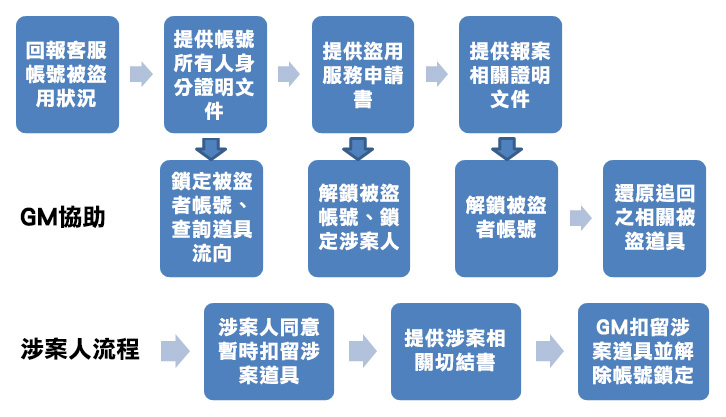

盜用處理流程/盜用處理服務
- 當盜用發生時，進行電腦的掃毒，確保電腦的安全無虞
- 官網提供的防盜OTB系統，建議進行申請保護帳號安全
相關表格申請：
(一)盜用服務申請書
填寫完成後，可利用傳真、上傳、掃描方式提供
表單點我下載
(二)提供報案或備案證明文件
可利用傳真、上傳、掃描方式提供

- 被盜者使用客服諮詢系統、客服LINE群(@callofchaos2)，向客服人員反映帳號遭盜用問題
- 帳號所有人需提供與官網、身份證明文件相符合之身份證字號、出生年月日之證件上傳至客服中心或拍照至客服LINE群，並說明【盜用處理期間，同意將帳號進行鎖定】
- 由GM查詢相關道具流向，如符合盜用處理流程判定者，將進行鎖定被盜者帳號。
- 玩家需在48小時內提供盜用服務申請書，以利個人帳號解鎖與鎖定相關涉案人
- 當GM收到玩家提供相關報案三聯單後，於14個工作日內還原追回之相關被盜道具。
- 涉案者若非真實盜用者，需提供涉案相關切結書與同意暫時扣留道具同意書後，才能進行帳號解鎖。
- 被盜者若於30日內未提供相關報案證明文件，視同放棄涉案道具。屆時將解除相關涉案人帳號鎖定，並將扣留之道具還原。
注意事項：
- 盜用處理服務僅限身份資料真實之玩家，若資料有誤或亂填將不在盜用處理服務圍內。
- 因涉及司法案件，為確保帳號資料真實性，相關人員會先進行身份確認作業。
- 若涉案人已使用遊戲正常方式將無償取得之利益進行消耗，則無法追還原價值之道具，請玩家注意。
- 由於被盜者之報案證明文件攸關被盜後續追回道具流程運作，請務必妥善保存文件以茲證明。
- 因盜用流程運作以收件日為準，需耗費一定的工作日，因此建議玩家儘早提供相關報案證明文件，以避免超過追朔期限而損失。
- 相關被盜/涉案玩家若有帳號或角色異動情事，皆會以郵件或LINE私訊告知，請玩家留意自身的訊息。
- 若資料不足，文件或證件不齊，填寫錯誤或報案文件有問題等等狀況，將暫時保存案件，並由玩家以一開始訴求申報案件當日起算保存30日，若超過30日玩家未補足資料，則帳號將繼續鎖定不予開啟，並視該申請案件無效。若欲開啟該帳號仍須提供相關報案證明文件，但將不再處理該案件或進行物品賠償。
- 於盜用處理鎖定期間內，將不會獲得任何遊戲內、遊戲外之正在舉辦的活動獎賞，建議儘速辦理相關盜用流程。
- 為維護玩家權益，建議玩家務必於發生盜用案件後，至轄區警局報案取得相關報案證明文件作為紀錄，以確保個人資料如遭盜用者後續利用做為犯罪之用途時，會員有報案說明之依據。